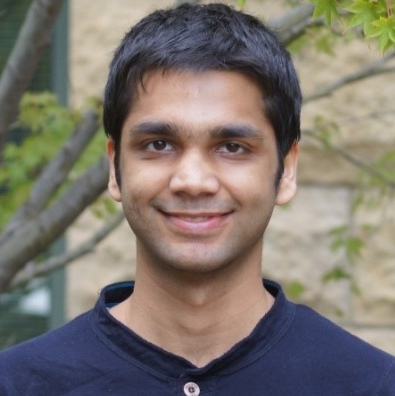

Venue
27th International Joint Conference on Artificial Intelligence and the 23rd European Conference on Artificial Intelligence
July 13-19, 2018
Stockholm, Sweden
Part of the Federated AI Meeting, that includes the AAMAS, ICML, ICCBR, and SoCS conferences.
Abstract
Generative models are a key paradigm for probabilistic reasoning within graphical models and probabilistic programming languages. Recent advancements in parameterizing these models using neural networks and stochastic optimization using gradient-based techniques have enabled scalable modeling of high-dimensional data across a breadth of modalities and applications.
The first half of this tutorial will provide a holistic review of the major families of deep generative models, including generative adversarial networks, variational autoencoders, and autoregressive models. For each of these models, we will discuss the probabilistic formulations, learning algorithms, and relationships with other models. The second half of the tutorial will demonstrate approaches for using deep generative models on a representative set of downstream inference tasks: semi-supervised learning, imitation learning, defence against adversarial examples, and compressed sensing. Finally, we will conclude with a discussion of the current challenges in the field and promising avenues for future research.
Speakers
Aditya Grover

Aditya Grover is a Ph.D student in the Computer Science Department at Stanford University, where he is advised by Stefano Ermon and affiliated with the Artificial Intelligence Laboratory and the Statistical Machine Learning Group. His research interests span generative modeling, statistical relational learning, and applications of artificial intelligence for improving society and environment. His research honors include a Microsoft Research PhD Fellowship in machine learning and a best paper award at the international workshop on statistical relational artificial intelligence (StarAI), 2016. Prior to joining Stanford, Aditya obtained his undergraduate degree in Computer Science and Engineering from Indian Institute of Technology (IIT), Delhi in 2015 where he was awarded the best undergraduate experimental project thesis award.
Stefano Ermon
Stefano Ermon is an Assistant Professor in the Computer Science Department at Stanford University, where he is affiliated with the Artificial Intelligence Laboratory, and a fellow of the Woods Institute for the Environment. His research is centered on techniques for probabilistic modeling of data, inference, and optimization, and is motivated by a range of applications, in particular ones in the emerging field of computational sustainability. He has won several awards, including four Best Paper Awards (AAAI, UAI and CP), a NSF Career Award, an ONR Young Investigator Award, a Sony Faculty Innovation Award, an AWS Machine Learning Award, a Hellman Faculty Fellowship, and the IJCAI Computers and Thought Award. Stefano earned his Ph.D. in Computer Science at Cornell University in 2015.
Outline for the tutorial
First session (duration: 1 hour and 30 minutes from 2-3:30 pm)
- Motivation for generative modeling and contrasts with discriminative models.
- Definition and characteristics of a generative model: estimate densities, simulate data, learn representations.
- Traditional approaches to generative modeling and the role of deep neural networks for effective parameterization.
- Taxonomy of generative model based on learning algorithms: likelihood-based vs. likelihood-free learning.
- Likelihood-based learning instantiations:
- Autoregressive Models (directed, fully observed)
- Variational Autoencoders (directed, latent variable)
Second session (duration: 2 hours from 4-6 pm)
- Likelihood-based learning instantiations(continued):
- Normalizing Flow Models (directed, latent variable)
- Likelihood-free learning instantiations:
- Generative Adversarial Networks (directed, latent variable)
- Applications of deep generative models
- Semi-supervised learning
- Imitation learning
- Adversarial examples
- Compressed sensing
- Discussion on key challenges and outlook towards future research in generative models.
Slides
The slides for the tutorial are available here.
Related surveys and tutorials
- Learning deep generative models. Ruslan Salakhutdinov. Annual Review of Statistics and Its Application, April 2015.
- Tutorial on Generative Adversarial Networks. Ian Goodfellow. Neural Information Processing Systems, December 2016.
- Tutorial on Deep Generative Models. Shakir Mohamed and Danilo Rezende. Uncertainty in Artificial Intelligence, July 2017.
- Tutorial on Generative Adversarial Networks. Computer Vision and Pattern Recognition, June 2018.